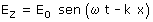
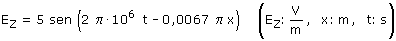
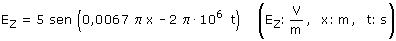

|
En las ondas electromagnéticas la perturbación que se propaga consiste en un campo eléctrico y otro magnético perpendiculares entre si y perpendiculares a la dirección de propagación. En este problema solamente nos interesa uno de los campos, el eléctrico La ecuación de onda será de la forma:  El signo negativo en la fase indica que la onda se propaga en sentido de x creciente Parámetros de la onda:
La ecuación de la onda será entonces:  También puede darse la ecuación de esta forma:  |